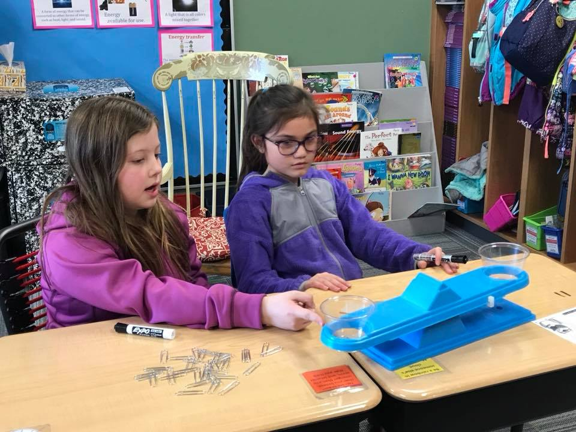

In the Classroom
My name is Maya Lierz and I’m in 3rd grade. I live in Omaha Nebraska with my mom, my dad and my sister, Harper. I have many friends at school and in my neighborhood. My favorite things to do are read, play with friends and watch movies. This past year I went to Colorado and Mexico on vacation. In Colorado we did lots of skiing at Winter Park and in Mexico we did a lot of swimming in the pool and the beach.
I enjoy school very much. My favorite subjects are reading and writing. The school I go to is called Prairie Queen (PQ) and it opened 2 years ago. I went to Kindergarten at a different school and then transferred to PQ. My sister, Harper is 6 years old and in Kindergarten at PQ. We both take the bus to and from school. Our bus driver’s name is Brandon. We like Brandon because he lets us eat candy and listen to music, he hooks the bus stereo up to his phone and plays our requests.
My grandparents live in my same neighborhood, just one street over. Sometimes my sister and I go there after school if mom and dad are not home. It’s nice living so close to grandparents because we get to see them a lot and we don’t have to any other babysitter. My grandparents have a black (standard size) poodle named Claude. We have a golden retriever named Apollo. Apollo and Claude get along really well.